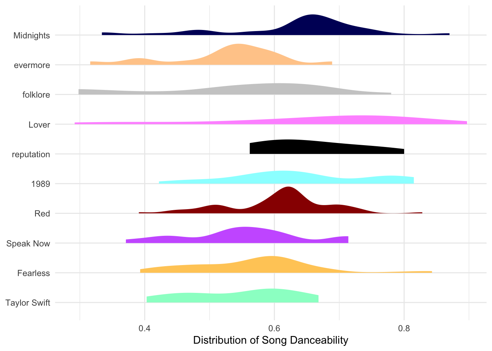
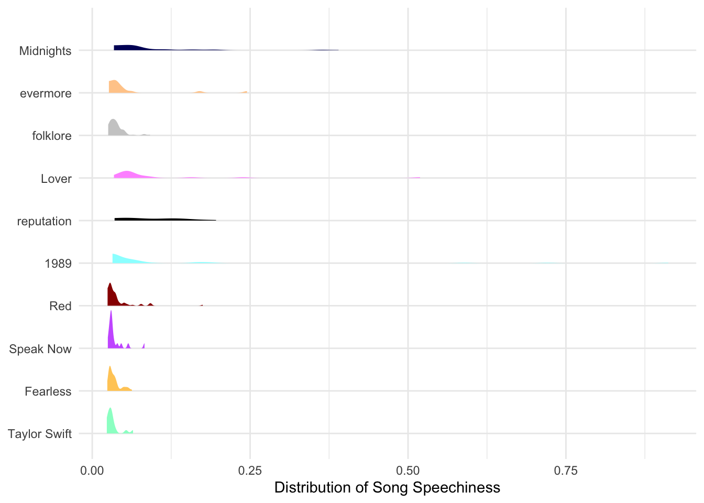
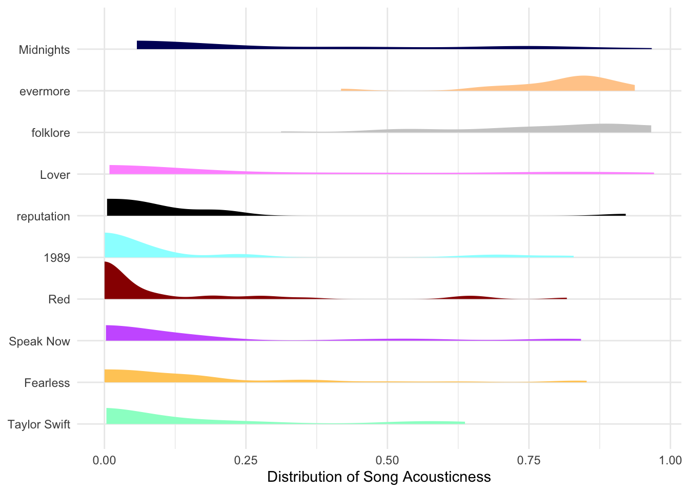
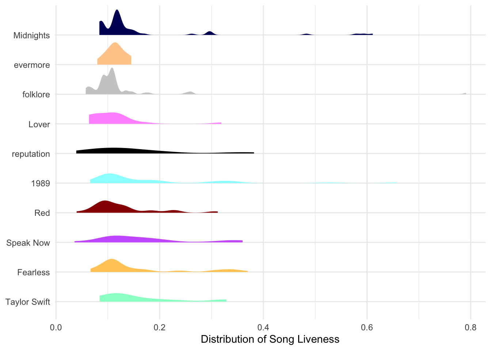
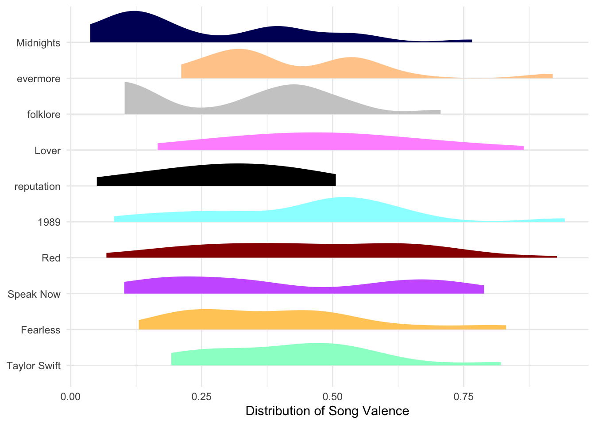
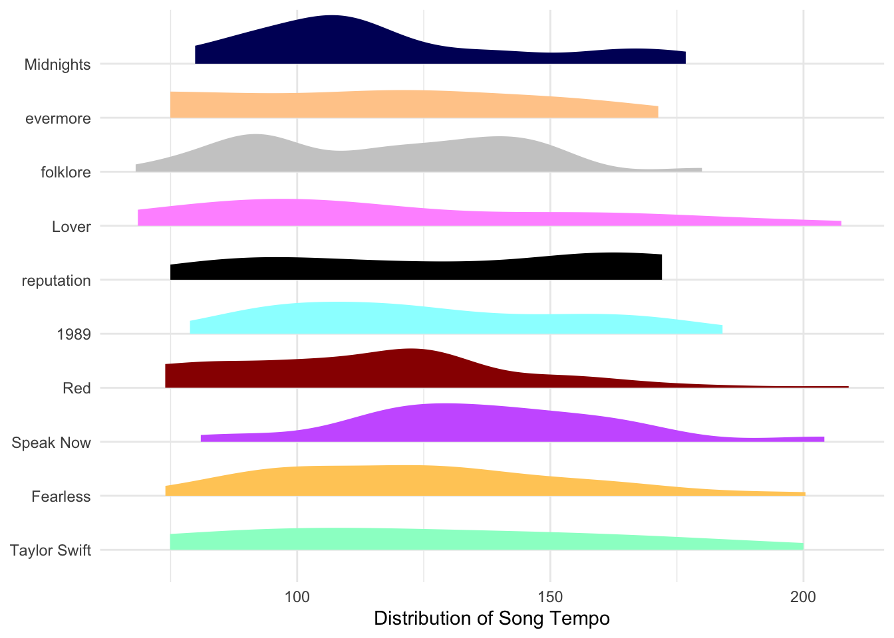
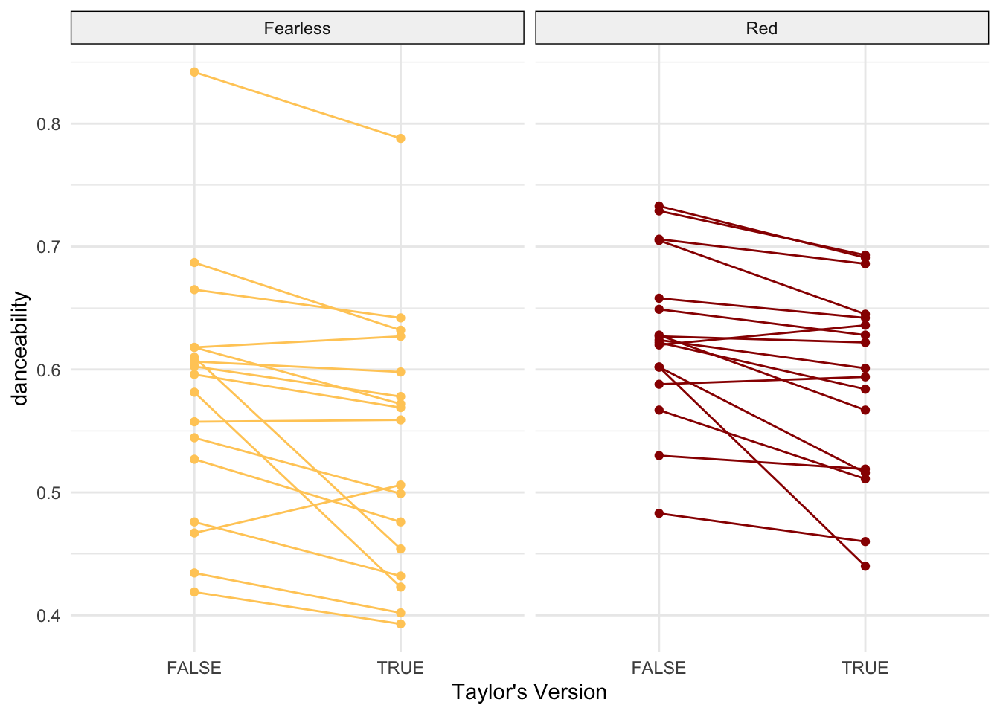
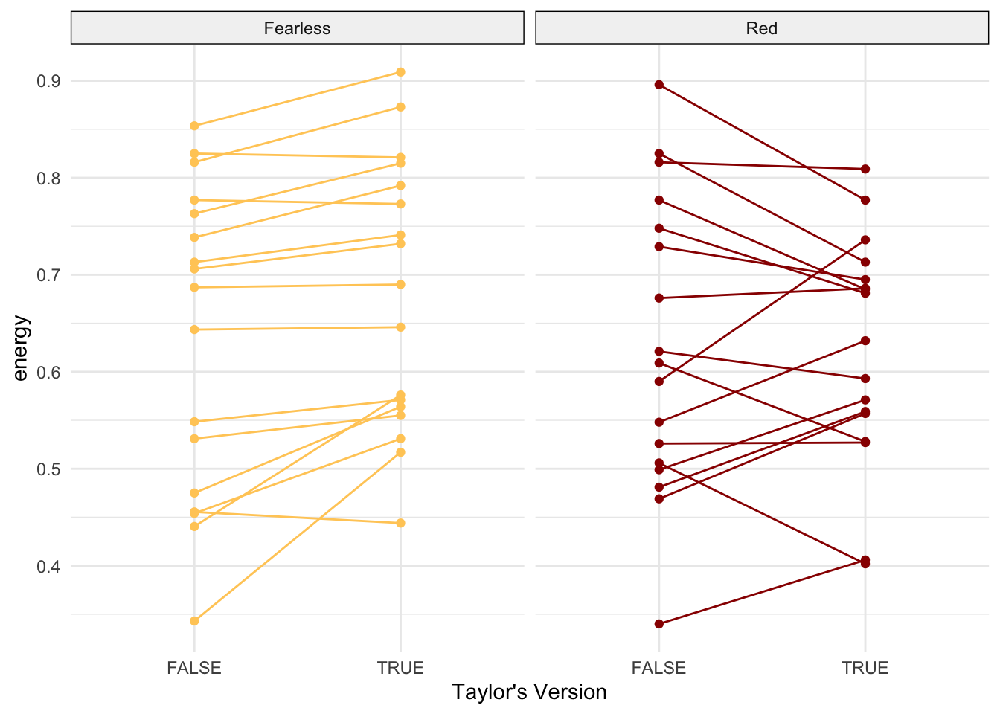
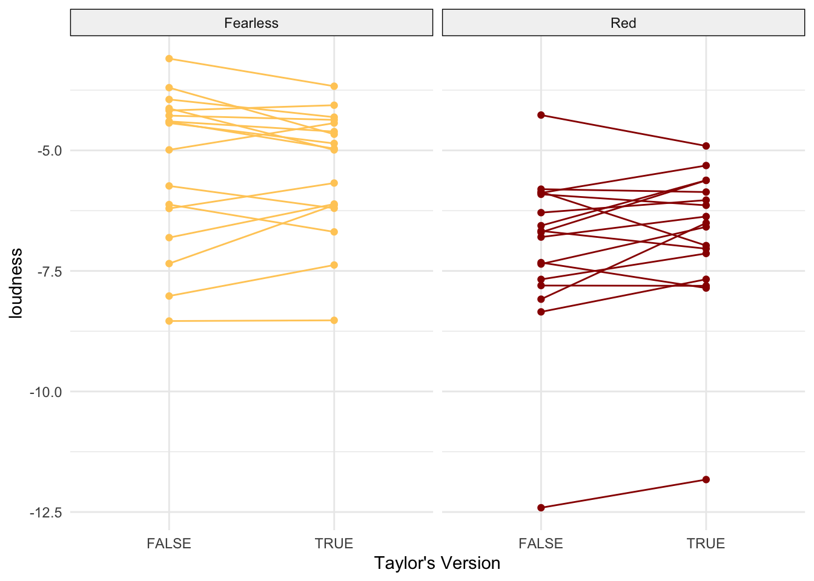
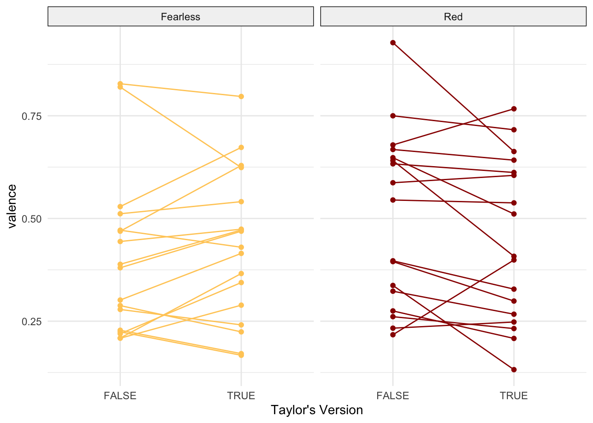

library(spotifyr) # to access spotify API
library(tidyverse) # for all things workflow + stringr
library(knitr) # for pretty-ish tables
library(lubridate) # for nice date handling
library(ggdist) # for distribution plotting
library(scales) # for plot label troublesCan I ask you a question? Have you ever wondered which of Taylor Swift’s songs are the most danceable? Which songs are saddest? Slowest? Lowest? Well, if the answer is no, you’re playing a stupid game and you’ve won a stupid prize – leave now. Assuming the answer to any of those questions was an incredibly enthusiastic YES, then you’re the lucky one.
So, R you ready for it?
DISCLAIMER: Obviously I’m a very busy important person so I’m not going to answer ALL of your questions today, but I’ll try my very best to keep coming back and working on this, so please come back and check it out.
Here are the packages we’ll be using.
Spotify API
Using (Spotify’s Web API)[https://developer.spotify.com/documentation/web-api], we can access all sorts of fun information about an artist. If you’re following along at home and wondering if this is the explicit version with all those Xs below, no. I’m just avoiding giving you my super secret client_id and client_secret. You can get your own by visiting your Spotify developer dashboard.
# albums we/I don't want included in the data
ew_david <- c("Live From Clear Channel Stripped 2008",
"Speak Now World Tour Live",
"reputation Stadium Tour Surprise Song Playlist")#Sys.setenv(SPOTIFY_CLIENT_ID = 'XXXXXXXXXXXX')
#Sys.setenv(SPOTIFY_CLIENT_SECRET = 'XXXXXXXXXXXX')
access_token <- get_spotify_access_token()
swifty <- get_artist_audio_features('taylor swift') |>
# filter out albums we don't want
filter(!album_name %in% ew_david) |>
# clean up album names
mutate(album_name_og = album_name,
album_edition = str_extract_all(album_name,
"\\([^()]+\\)|Platinum Edition|\\:+(\\D+)",
simplify = TRUE),
album_edition = if_else(nchar(album_edition) != 0,
str_remove_all(album_edition, "\\(|\\)|\\:"),
"original"),
album_name = str_squish(str_remove_all(album_name,
"\\([^()]+\\)|Platinum Edition|\\:+(\\D+)")))To give you an idea of the sort of information we now have at our fingertips, here’s an example row of data, for everyone’s favorite song:
swifty |>
filter(track_name ==
"All Too Well (10 Minute Version) (Taylor's Version) (From The Vault)") |>
kable()| artist_name | artist_id | album_id | album_type | album_images | album_release_date | album_release_year | album_release_date_precision | danceability | energy | key | loudness | mode | speechiness | acousticness | instrumentalness | liveness | valence | tempo | track_id | analysis_url | time_signature | artists | available_markets | disc_number | duration_ms | explicit | track_href | is_local | track_name | track_preview_url | track_number | type | track_uri | external_urls.spotify | album_name | key_name | mode_name | key_mode | album_name_og | album_edition |
|---|---|---|---|---|---|---|---|---|---|---|---|---|---|---|---|---|---|---|---|---|---|---|---|---|---|---|---|---|---|---|---|---|---|---|---|---|---|---|---|---|
| Taylor Swift | 06HL4z0CvFAxyc27GXpf02 | 6kZ42qRrzov54LcAk4onW9 | album | 640 , 300 , 64 , https://i.scdn.co/image/ab67616d0000b273318443aab3531a0558e79a4d, https://i.scdn.co/image/ab67616d00001e02318443aab3531a0558e79a4d, https://i.scdn.co/image/ab67616d00004851318443aab3531a0558e79a4d, 640 , 300 , 64 | 2021-11-12 | 2021 | day | 0.631 | 0.518 | 0 | -8.771 | 1 | 0.0303 | 0.274 | 0 | 0.088 | 0.205 | 93.023 | 5enxwA8aAbwZbf5qCHORXi | https://api.spotify.com/v1/audio-analysis/5enxwA8aAbwZbf5qCHORXi | 4 | https://api.spotify.com/v1/artists/06HL4z0CvFAxyc27GXpf02, 06HL4z0CvFAxyc27GXpf02 , Taylor Swift , artist , spotify:artist:06HL4z0CvFAxyc27GXpf02 , https://open.spotify.com/artist/06HL4z0CvFAxyc27GXpf02 | AR, AU, AT, BE, BO, BR, BG, CA, CL, CO, CR, CY, CZ, DK, DO, DE, EC, EE, SV, FI, FR, GR, GT, HN, HK, HU, IS, IE, IT, LV, LT, LU, MY, MT, MX, NL, NZ, NI, NO, PA, PY, PE, PH, PL, PT, SG, SK, ES, SE, CH, TW, TR, UY, US, GB, AD, LI, MC, ID, JP, TH, VN, RO, IL, ZA, SA, AE, BH, QA, OM, KW, EG, MA, DZ, TN, LB, JO, PS, IN, BY, KZ, MD, UA, AL, BA, HR, ME, MK, RS, SI, KR, BD, PK, LK, GH, KE, NG, TZ, UG, AG, AM, BS, BB, BZ, BT, BW, BF, CV, CW, DM, FJ, GM, GE, GD, GW, GY, HT, JM, KI, LS, LR, MW, MV, ML, MH, FM, NA, NR, NE, PW, PG, WS, SM, ST, SN, SC, SL, SB, KN, LC, VC, SR, TL, TO, TT, TV, VU, AZ, BN, BI, KH, CM, TD, KM, GQ, SZ, GA, GN, KG, LA, MO, MR, MN, NP, RW, TG, UZ, ZW, BJ, MG, MU, MZ, AO, CI, DJ, ZM, CD, CG, IQ, LY, TJ, VE, ET, XK | 1 | 613026 | TRUE | https://api.spotify.com/v1/tracks/5enxwA8aAbwZbf5qCHORXi | FALSE | All Too Well (10 Minute Version) (Taylor’s Version) (From The Vault) | NA | 30 | track | spotify:track:5enxwA8aAbwZbf5qCHORXi | https://open.spotify.com/track/5enxwA8aAbwZbf5qCHORXi | Red | C | major | C major | Red (Taylor’s Version) | Taylor’s Version |
Summary
You may already know this, but here’s a summary of Taylor’s discography.
| name | value | Fast Fact |
|---|---|---|
| Number of Songs | 258 | Number of Songs |
| Albums Released | 10 | Albums Released |
| Earliest Release | 2006 | Earliest Release |
| Most Recent Release | 2023 | Most Recent Release |
| Songs Featuring Other Artists | 25 | Songs Featuring Other Artists |
| Songs with Explicit Labels | 54 | Songs with Explicit Labels |
| Shortest Song Minutes | 1.79 | Shortest Song Minutes |
| Longest Song Minutes | 10.22 | Longest Song Minutes |
| Average Song Minutes | 3.96 | Average Song Minutes |
| Album | Number of Songs | Release Year | Songs Featuring Other Artists | Songs with Explicit Labels | Shortest Song (Minutes) | Longest Song (Minutes) | Average Song (Minutes) |
|---|---|---|---|---|---|---|---|
| Taylor Swift | 15 | 2006 | 0 | 0 | 2.88 | 4.14 | 3.57 |
| Fearless | 13 | 2008 | 0 | 0 | 3.34 | 4.91 | 4.12 |
| Fearless Platinum Edition | 19 | 2008 | 0 | 0 | 3.34 | 5.18 | 4.18 |
| Speak Now | 14 | 2010 | 0 | 0 | 3.62 | 6.73 | 4.79 |
| Speak Now (Deluxe Edition) | 20 | 2010 | 0 | 0 | 3.62 | 6.73 | 4.59 |
| Red | 16 | 2012 | 0 | 0 | 3.20 | 5.46 | 4.06 |
| Red (Deluxe Edition) | 22 | 2012 | 0 | 0 | 3.20 | 5.46 | 4.10 |
| 1989 | 13 | 2014 | 0 | 0 | 3.22 | 4.52 | 3.75 |
| 1989 (Deluxe Edition) | 19 | 2014 | 0 | 0 | 1.79 | 4.52 | 3.62 |
| reputation | 15 | 2017 | 0 | 0 | 3.39 | 4.08 | 3.72 |
| Lover | 18 | 2019 | 2 | 0 | 2.51 | 4.89 | 3.44 |
| evermore | 15 | 2020 | 3 | 6 | 3.01 | 5.25 | 4.05 |
| folklore | 16 | 2020 | 1 | 5 | 3.18 | 4.91 | 3.98 |
| folklore (deluxe version) | 17 | 2020 | 1 | 5 | 3.18 | 4.91 | 3.95 |
| folklore: the long pond studio sessions (from the Disney+ special) [deluxe edition] | 34 | 2020 | 2 | 9 | 3.06 | 4.92 | 3.96 |
| evermore (deluxe version) | 17 | 2021 | 3 | 6 | 3.01 | 5.25 | 4.06 |
| Fearless (Taylor’s Version) | 26 | 2021 | 3 | 0 | 3.16 | 5.20 | 4.10 |
| Red (Taylor’s Version) | 30 | 2021 | 5 | 2 | 3.22 | 10.22 | 4.36 |
| Midnights | 13 | 2022 | 1 | 6 | 2.75 | 4.27 | 3.40 |
| Midnights (3am Edition) | 20 | 2022 | 1 | 6 | 2.48 | 4.34 | 3.47 |
| Midnights (The Til Dawn Edition) | 23 | 2023 | 3 | 9 | 2.48 | 4.34 | 3.50 |
Musical Metrics
| Metric Name | Definition | Possible Values |
|---|---|---|
| danceability | how suitable a track is for dancing based on a combination of musical elements including tempo, rhythm stability, beat strength, and overall regularity | 0 – 1 |
| energy | perceptual measure of intensity and activity by way of dynamic range, perceived loudness, timbre, onset rate, and general entropy | 0 – 1 |
| key | key the track is in | standard Pitch Class notation. E.g. 0 = C, 1 = C♯/D♭, 2 = D, and so on |
| loudness | overall loudness of a track in decibels (dB) averaged across the entire track | -60 – 0 db. |
| mode | modality (major or minor) of a track; the type of scale from which its melodic content is derived | major = 1; minor = 0 |
| speechiness | the presence of spoken words in a track | speech-like recordings are closer to 1.0 (e.g., > 0.66 = tracks made entirely of spoken words, between 0.33 and 0.66 = tracks containing music and speech such as rap music, < 0.33 = tracks mostly music and other non-speech-like sounds |
| acousticness | confidence measure from 0.0 to 1.0 of whether the track is acoustic | 0 – 1 |
| instrumentalness | predicts whether a track contains no vocals; “ooh” and “aah” sounds are treated as instrumental with rap and spoken word tracks clearly “vocal” | 0 – 1 (more vocals to less vocals) |
| liveness | detects the presence of an audience in the recording | 0 – 1 (> 0.8 indicates strong likelihood of live track) |
| valence | musical positiveness conveyed by a track | 0 – 1 (low valence (e.g., sad, depressed, angry) to high valence (e.g., happy, cheerful, euphoric)) |
| tempo | overall estimated tempo of a track in beats per minute (BPM) | 40 – 200+ |
Albums and Metrics
Each album defines an era. What defines the album? Let’s find out.
First, to make things a little bit easier, you ought to know that I am collapsing albums. That is, even though there are 2, 3, sometimes 4 versions of each album (looking at you Midnights w/ less Lana, medium Lana, and more Lana), we will be looking at each album as a collection of all of the songs. This isn’t the best strategy, but it definitely makes my figures a lot nicer.
Each album/era is defined by a color. Let’s define those here (courtesy of my best RA Dr. Gabrielle Pfund):
■ Taylor Swift
■ Fearless
■ Speak Now
■ Red
■ 1989
■ reputation
■ Lover
■ folklore
■ evermore
■ Midnights
album_colors <- c(
`Taylor Swift` = "#99FFCC",
`Fearless` = "#FFCC66",
`Speak Now` = "#CC66FF",
`Red` = "#990000",
`1989` = "#99FFFF",
`reputation` = "#000000",
`Lover` = "#FF99FF",
`folklore` = "#CCCCCC",
`evermore` = "#FFCC99",
`Midnights` = "#000066")Danceability
swifty |>
ggplot(aes(y = fct_reorder(album_name, album_release_year),
x = danceability, fill = album_name)) +
stat_slab() +
scale_y_discrete(labels = label_wrap(20)) +
labs(x = "Distribution of Song Danceability", y = NULL) +
scale_fill_manual(values=album_colors) +
guides(fill = "none", color = "none") +
theme_minimal()
Key
???
Loudness
swifty |>
ggplot(aes(y = fct_reorder(album_name, album_release_year),
x = loudness, fill = album_name)) +
stat_slab() +
scale_y_discrete(labels = label_wrap(20)) +
labs(x = "Distribution of Song Loudness", y = NULL) +
scale_fill_manual(values=album_colors) +
guides(fill = "none", color = "none") +
theme_minimal()
Mode
???
Speechiness
swifty |>
ggplot(aes(y = fct_reorder(album_name, album_release_year),
x = speechiness, fill = album_name)) +
stat_slab() +
scale_y_discrete(labels = label_wrap(20)) +
labs(x = "Distribution of Song Speechiness", y = NULL) +
scale_fill_manual(values=album_colors) +
guides(fill = "none", color = "none") +
theme_minimal()
Acousticness
swifty |>
ggplot(aes(y = fct_reorder(album_name, album_release_year),
x = acousticness, fill = album_name)) +
stat_slab() +
scale_y_discrete(labels = label_wrap(20)) +
labs(x = "Distribution of Song Acousticness", y = NULL) +
scale_fill_manual(values=album_colors) +
guides(fill = "none", color = "none") +
theme_minimal()
Instrumentalness
Liveness
swifty |>
ggplot(aes(y = fct_reorder(album_name, album_release_year),
x = liveness, fill = album_name)) +
stat_slab() +
scale_y_discrete(labels = label_wrap(20)) +
labs(x = "Distribution of Song Liveness", y = NULL) +
scale_fill_manual(values=album_colors) +
guides(fill = "none", color = "none") +
theme_minimal()
Valence
swifty |>
ggplot(aes(y = fct_reorder(album_name, album_release_year),
x = valence, fill = album_name)) +
stat_slab() +
scale_y_discrete(labels = label_wrap(20)) +
labs(x = "Distribution of Song Valence", y = NULL) +
scale_fill_manual(values=album_colors) +
guides(fill = "none", color = "none") +
theme_minimal()
tempo
swifty |>
ggplot(aes(y = fct_reorder(album_name, album_release_year),
x = tempo, fill = album_name)) +
stat_slab() +
scale_y_discrete(labels = label_wrap(20)) +
labs(x = "Distribution of Song Tempo", y = NULL) +
scale_fill_manual(values=album_colors) +
guides(fill = "none", color = "none") +
theme_minimal()
Taylor’s Version vs. Not(?) Taylor’s Version
For my next bit of exploration, I’m wondering how much a difference Taylor made in how Taylory Taylor is.
First, let’s add a boolean that tells us if a song is Taylor’s Version. Dirty data problem 1 of ???: tick marks vs. apostrophes. And this is why we use unicode, friends.
swifty <- swifty |>
mutate(isTV = str_detect(track_name, "Taylor's Version|Taylor’s Version")) Now that we have TV as it’s own variable, we can make our data one step closer to some sort of normal form by making sure that track name contains one and only one type of information: the track name.
Tip: stringr
Stringr is one of my favorite tools in the tidyverse, especially for dealing with any sort of text data. Here I used:
str_remove()to remove (Taylor’s Version) from song titles to better group them laterstr_squish()to remove any whitespace from the start and end, and reduce any double spaces within a song to a single spacestr_to_lower()is the cute little sister ofstr_to_upper()and converts characters to lowercasestr_replace_all()replaces all of the target string (in this case all punctuation) with the replacement string (in this case nothingness)
swifty <- swifty |>
mutate(track_name = str_remove(track_name, "\\(Taylor's Version\\)|\\(Taylor’s Version\\)"),
track_name = str_squish(track_name),
track_name = str_to_lower(track_name),
track_name = str_replace_all(track_name, "[[:punct:]]", ""))Now we can grab just our songs that have a TV and a no-TV.
songs_with_tvs <- swifty |>
group_by(track_name) |>
summarize(n = n(),
hasTV = sum(isTV)) |>
filter(n > 1 & hasTV > 0)Let’s take a look at danceability first. Looks like there is a general trend for Taylor’s Version of songs to be less danceable.
Note
Note: Apparently it would require fundamental changes to ggplot2 (according to Sir Hadley), so we cannot use album colors for each facet label without some super hacky workarounds. Maybe ggplot3 will serve us better.
swifty |>
filter(track_name %in% songs_with_tvs$track_name) |>
group_by(track_name, isTV, Album = album_name) |>
summarize(danceability = mean(danceability)) |>
ggplot(aes(x = isTV, y = danceability, group = track_name, color = Album)) +
scale_color_manual(values=album_colors) +
geom_point() +
geom_line(method = "lm") +
facet_grid(~Album) +
labs(x = "Taylor's Version") +
theme_minimal() +
guides(color = "none") +
theme(strip.background.x = element_rect(fill="gray95")) # this is where I wish fill would take a list of colors 
Energy
swifty |>
filter(track_name %in% songs_with_tvs$track_name) |>
group_by(track_name, isTV, Album = album_name) |>
summarize(energy = mean(energy)) |>
ggplot(aes(x = isTV, y = energy, group = track_name, color = Album)) +
scale_color_manual(values=album_colors) +
geom_point() +
geom_line(method = "lm") +
facet_grid(~Album) +
labs(x = "Taylor's Version") +
theme_minimal() +
guides(color = "none") +
theme(strip.background.x = element_rect(fill="gray95")) # this is where I wish fill would take a list of colors 
Loudness
swifty |>
filter(track_name %in% songs_with_tvs$track_name) |>
group_by(track_name, isTV, Album = album_name) |>
summarize(loudness = mean(loudness)) |>
ggplot(aes(x = isTV, y = loudness, group = track_name, color = Album)) +
scale_color_manual(values=album_colors) +
geom_point() +
geom_line(method = "lm") +
facet_grid(~Album) +
labs(x = "Taylor's Version") +
theme_minimal() +
guides(color = "none") +
theme(strip.background.x = element_rect(fill="gray95")) # this is where I wish fill would take a list of colors 
Valence
swifty |>
filter(track_name %in% songs_with_tvs$track_name) |>
group_by(track_name, isTV, Album = album_name) |>
summarize(valence = mean(valence)) |>
ggplot(aes(x = isTV, y = valence, group = track_name, color = Album)) +
scale_color_manual(values=album_colors) +
geom_point() +
geom_line(method = "lm") +
facet_grid(~Album) +
labs(x = "Taylor's Version") +
theme_minimal() +
guides(color = "none") +
theme(strip.background.x = element_rect(fill="gray95")) # this is where I wish fill would take a list of colors 
References:
while I’m pretty confident in my brain’s ability to store endless lyrics, this website made possible all of the lyrics and references found throughout this project